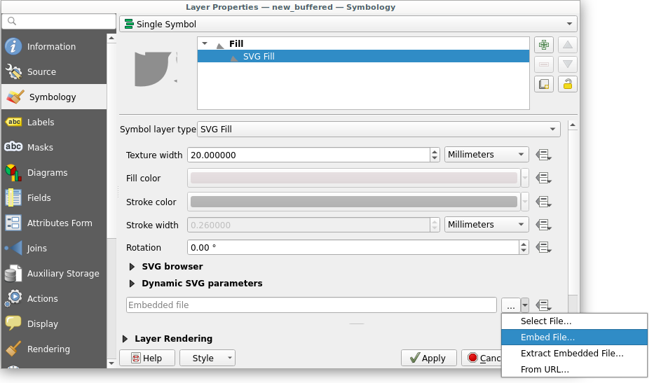
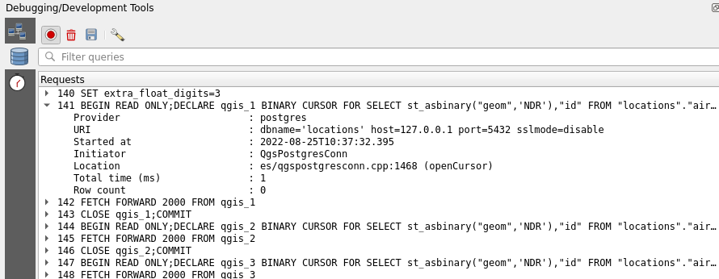

<!DOCTYPE html>
<html lang="en">
  <head>
    <meta charset="utf-8" />
    <meta name="viewport" content="width=device-width, initial-scale=1.0, maximum-scale=1.0, user-scalable=no" />

    <title>QGIS & PostGIS  tips & tricks</title>
    <link rel="shortcut icon" href="./favicon.ico" />
    <link rel="stylesheet" href="./dist/reset.css" />
    <link rel="stylesheet" href="./dist/reveal.css" />
    <link rel="stylesheet" href="./dist/theme/black.css" id="theme" />
    <link rel="stylesheet" href="./css/highlight/base16/zenburn.css" />

    <link rel="stylesheet" href="./css/oslandia.css" />

  </head>
  <body>
    <div class="reveal">
      <div class="slides"><section  data-markdown><script type="text/template">

# PostGIS & QGIS 
### tips & tricks

FOSS4G 2022 - Firenze - 26/08/2022

<table>
<tr><td>
</img>
</td><td></img></td>
</table>

Julien Cabieces - Oslandia


<table vertical-align="middle">
<style>
img {
margin:0 !important;
vertical-align:top !important;
}
table td {
border-bottom: 0 !important;
padding-left: 0 !important;
vertical-align:top !important;
}
</style>
<tr><td>

</td><td>@troopa81</td></tr>
<tr><td>

</td><td>@CabiecesJ</td></tr>
</table>

</script></section><section  data-markdown><script type="text/template">
## I'll talk about...

- Relations
- PostgreSQL Notify
- Processing to database
- Managing DB from browser
- Save project in database
- SQL Logging

**Not an exhaustive feature list**
</script></section><section  data-markdown><script type="text/template">
## Relations
</script></section><section  data-markdown><script type="text/template">

### Use case


* **NM Relation**
* Airports have airlines...
* and airlines have airports

* see [QGIS doc](https://docs.qgis.org/3.16/en/docs/user_manual/working_with_vector/attribute_table.html#introducing-many-to-many-n-m-relations) for more informations
</script></section><section  data-markdown><script type="text/template">
### Discover relations


* Load all targeted layers
* *Project* > *Properties* > *Relations*
* *Discover Relations*
* Select all > *OK*
</script></section><section  data-markdown><script type="text/template">

### Evaluate primary keys


* Relations need valid PKs, not temporary ones
  * e.g. *nextval('locations.airports_id_seq'::regclass)*
* ⚠ Not enough...
  * Edit all concerned layers 
  * Save in the appropriate order (referenced first!)
  * What if errors!
</script></section><section  data-markdown><script type="text/template">

### Automatic transaction groups


  * Open a DB transaction ➡ Close it on save/finish edit
  * All layers from database edited at once! 
  * 👍 Evaluate triggers 
  * 👎 Long living transaction ➡ [caveats](https://github.com/qgis/QGIS-Enhancement-Proposals/issues/203)
    * lock on modified rows ➡ block other transactions

<!-- on rows modifications even if it's not the same field and deletion. 
If you modify an already transaction modified row, QGIS will block (but there is a timeout), with no warning
insert is OK (but maybe index is not updated 
-->
</script></section><section  data-markdown><script type="text/template">

### Buffered Transaction Group ⭐ New in 3.26 ⭐


* All modifications buffered and replayed on save
* in the appropiate order
* in one transaction
* 👎 Don't evaluate triggers live 
</script></section><section  data-markdown><script type="text/template">
### Form configuration


</script></section><section  data-markdown><script type="text/template">
<video src="videos/relations_demo.webm" height="700" controls/>
</script></section><section  data-markdown><script type="text/template">

## PostgreSQL Notify

* Trigger a layer refresh on PostgreSQL "event"
* Insert, Update, Delete, ...
</script></section><section  data-markdown><script type="text/template">
### PostgreSQL configuration


```sql
CREATE FUNCTION notify_points_updated() RETURNS trigger
LANGUAGE plpgsql
AS $$ 
BEGIN 
NOTIFY qgis, 'points updated';
RETURN NULL;
END; 
$$;


CREATE TRIGGER notify_points_updated 
AFTER INSERT OR UPDATE OR DELETE OR TRUNCATE ON my_points 
FOR EACH STATEMENT EXECUTE PROCEDURE notify_points_updated();
```
</script></section><section  data-markdown><script type="text/template">
### QGIS configuration

</img>
</script></section><section  data-markdown><script type="text/template">
<video src="videos/notify_refresh.webm" height="700" controls/>
</script></section><section  data-markdown><script type="text/template">
### Not only refresh 

- **How ?** With a little bit of Python magic
- **Where ?** Plugin / Startup script / Macros / Python console 
- **To do what ?** Anything from QGIS API


```python
def onNotify():
   iface.messageBar().pushInfo("Notify", "Points updated")

iface.activeLayer().dataProvider().notify.connect(onNotify)
```
</script></section><section  data-markdown><script type="text/template">
<video src="videos/notify_msg.webm" height="700" controls/>
</script></section><section  data-markdown><script type="text/template">
### Refresh other layers ?

- **Use case** : Refresh nodes according to intersecting lines using triggers
- **NO !!** : Prefer [data dependencies](https://oslandia.com/en/2020/01/10/en-qgis-snapping-improvements)

</img>

</script></section><section  data-markdown><script type="text/template">
## Processing to database

Output processing result directly to database
</script></section><section  data-markdown><script type="text/template">
<video src="videos/processing_to_pg.webm" controls/>
</script></section><section  data-markdown><script type="text/template">
## Managing DB from browser

</img>
</script></section><section  data-markdown><script type="text/template">
### You can create table

</img>
</script></section><section  data-markdown><script type="text/template">
### but also ...

* Create/Rename/Delete schema
* Create/Rename/Delete/Truncate table
* Add/Delete field
* Export to file
</script></section><section  data-markdown><script type="text/template">
### ... and execute SQL

</img>
</script></section><section  data-markdown><script type="text/template">
### Does it replace DB Manager ?

* Yes ... but [not completely](https://lists.osgeo.org/pipermail/qgis-developer/2022-June/064850.html)
* Some features are missing
  * Create/Manage constraint
  * Create view from query
  * Modify a column
  * Logging table (Is someone using this ?!!) 
  * ...
</script></section><section  data-markdown><script type="text/template">
### DB Manager

* No use of the QGIS provider API
* Not-well-tested

**Prefer the browser feature everytime possible!**
</script></section><section  data-markdown><script type="text/template">
## Save project in database
</script></section><section  data-markdown><script type="text/template">
### Enable option

</img>

</script></section><section  data-markdown><script type="text/template">
*Project* > *Save To* > *PostgreSQL...*

</img>

*Project* > *Open From* > *PostgreSQL...*
</script></section><section  data-markdown><script type="text/template">
### External files

</img>

* You can embed external file in project (SVG for instance) 
</script></section><section  data-markdown><script type="text/template">
## SQL Logging ⭐ New in 3.26 ⭐

</img>

- *View* > *Panels* > *Debugging/Development Tools*
- Log ALL SQL requests (select, insert, update...)
- Log also HTTP requests
</script></section><section  data-markdown><script type="text/template">
# Questions ?

FOSS4G 2022 - Firenze - 26/08/2022

<table>
<tr><td>
</img></td><td></img></td>
</table>

Julien Cabieces - Oslandia


<table vertical-align="middle">
<style>
img {
margin:0 !important;
vertical-align:top !important;
}
table td {
border-bottom: 0 !important;
padding-left: 0 !important;
vertical-align:top !important;
}
</style>
<tr><td>

</td><td>@troopa81</td></tr>
<tr><td>

</td><td>@CabiecesJ</td></tr>
</table>
</script></section></div>
    </div>

    <script src="./dist/reveal.js"></script>

    <script src="./plugin/markdown/markdown.js"></script>
    <script src="./plugin/highlight/highlight.js"></script>
    <script src="./plugin/zoom/zoom.js"></script>
    <script src="./plugin/notes/notes.js"></script>
    <script src="./plugin/math/math.js"></script>
    <script>
      function extend() {
        var target = {};
        for (var i = 0; i < arguments.length; i++) {
          var source = arguments[i];
          for (var key in source) {
            if (source.hasOwnProperty(key)) {
              target[key] = source[key];
            }
          }
        }
        return target;
      }

      // default options to init reveal.js
      var defaultOptions = {
        controls: true,
        progress: true,
        history: true,
        center: true,
        transition: 'default', // none/fade/slide/convex/concave/zoom
        plugins: [
          RevealMarkdown,
          RevealHighlight,
          RevealZoom,
          RevealNotes,
          RevealMath
        ]
      };

      // options from URL query string
      var queryOptions = Reveal().getQueryHash() || {};

      var options = extend(defaultOptions, {}, queryOptions);
    </script>


    <script>
      Reveal.initialize(options);
    </script>
  </body>
</html>
